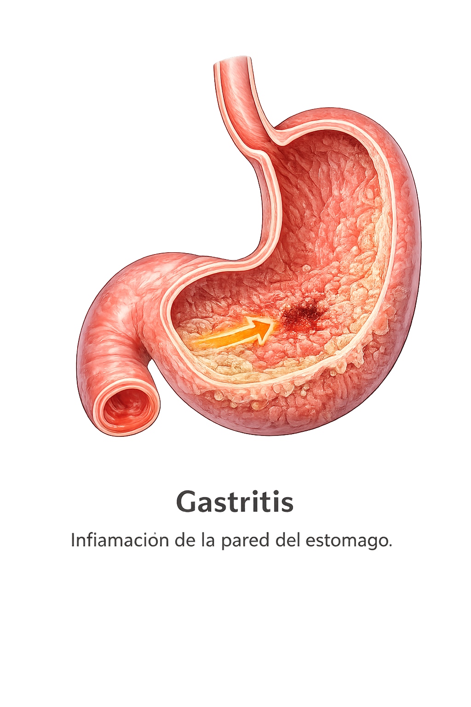
Gastritis
Inflamación de la pared del estómago.
Es una infección crónica del estómago causada por la bacteria Helicobacter pylori.

Inflamación de la pared del estómago.
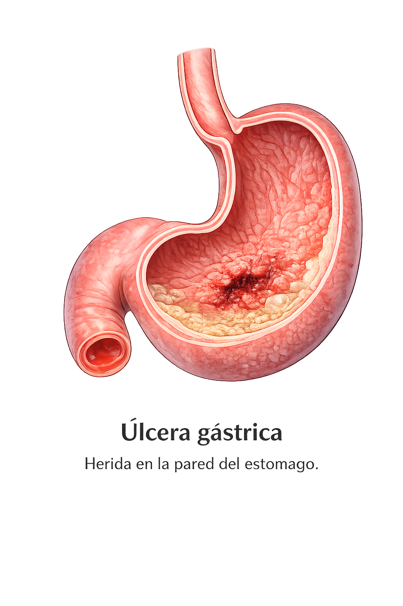
Herida en la pared del estómago.
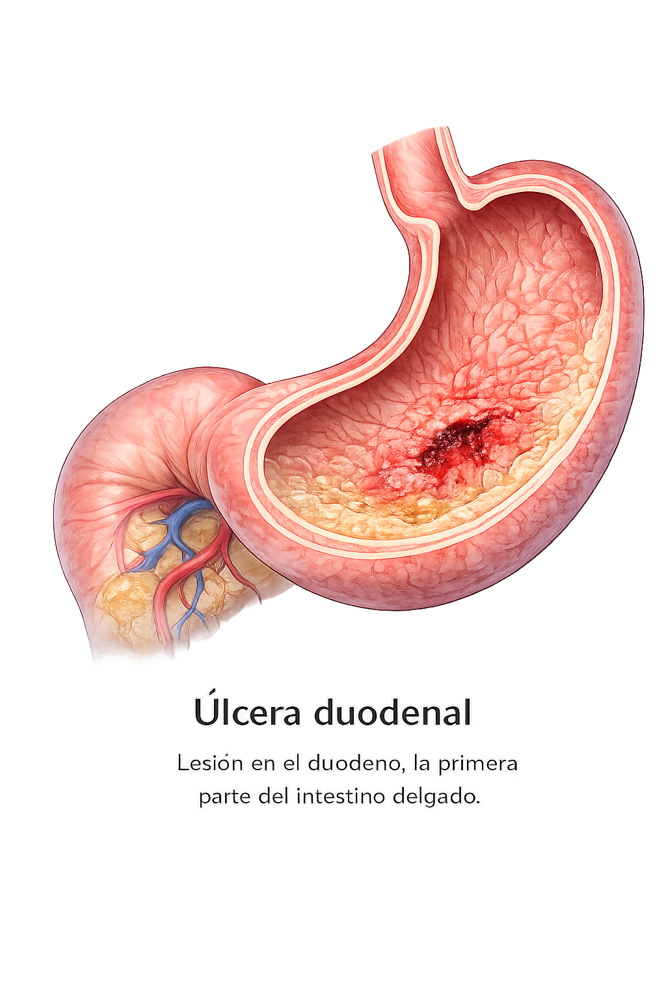
Lesión en el duodeno, la primera parte del intestino delgado.
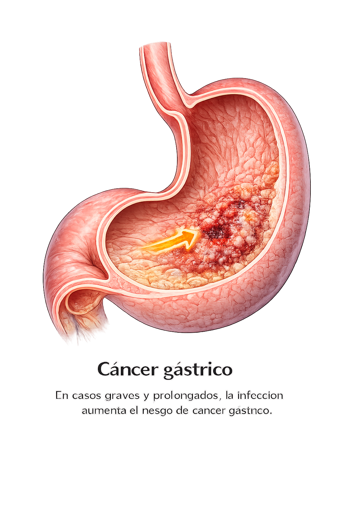
En casos graves y prolongados, la infección aumenta el riesgo de cáncer gástrico.
Aquí se muestra el proceso paso a paso con 6 puntos visuales y una imagen distinta para cada etapa.
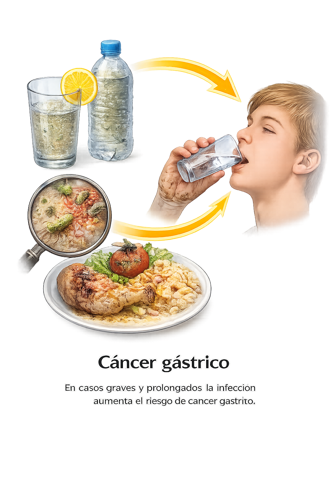
Entra por agua o alimentos contaminados y también por mala higiene.
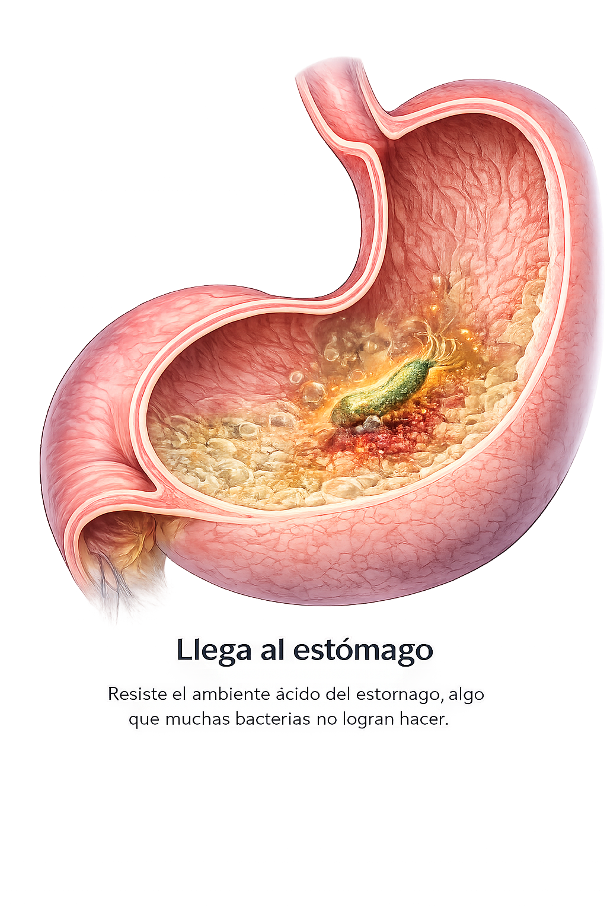
Resiste el ambiente ácido del estómago, algo que muchas bacterias no logran hacer.
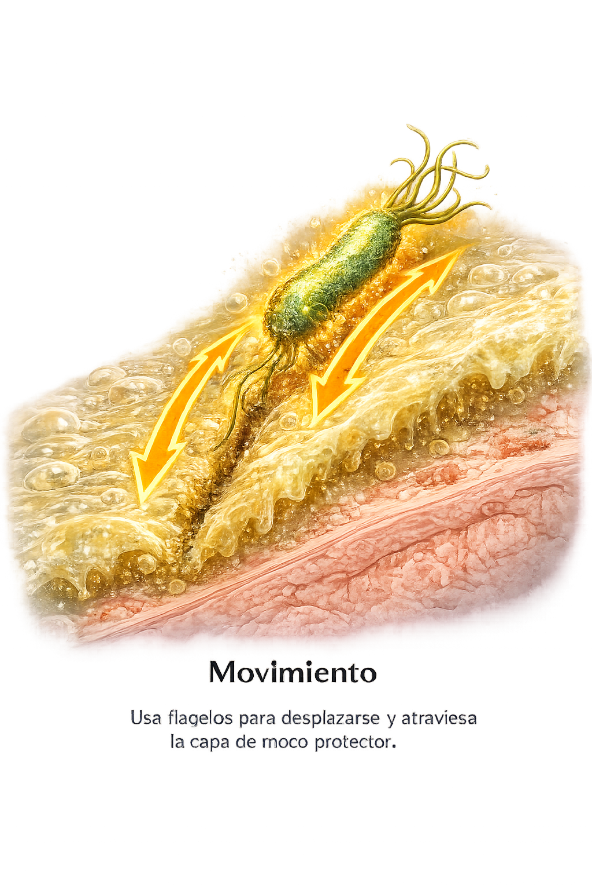
Usa flagelos para desplazarse y atraviesa la capa de moco protector.
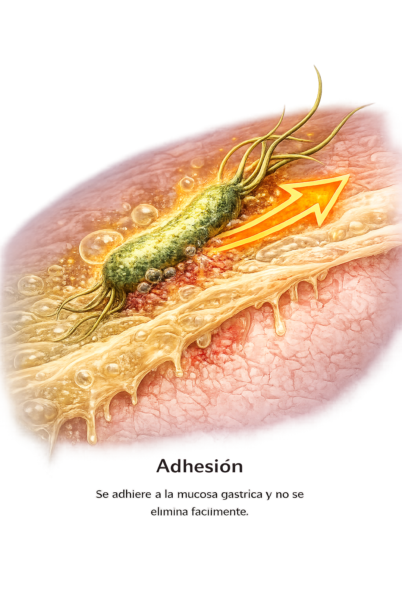
Se adhiere a la mucosa gástrica y no se elimina fácilmente.
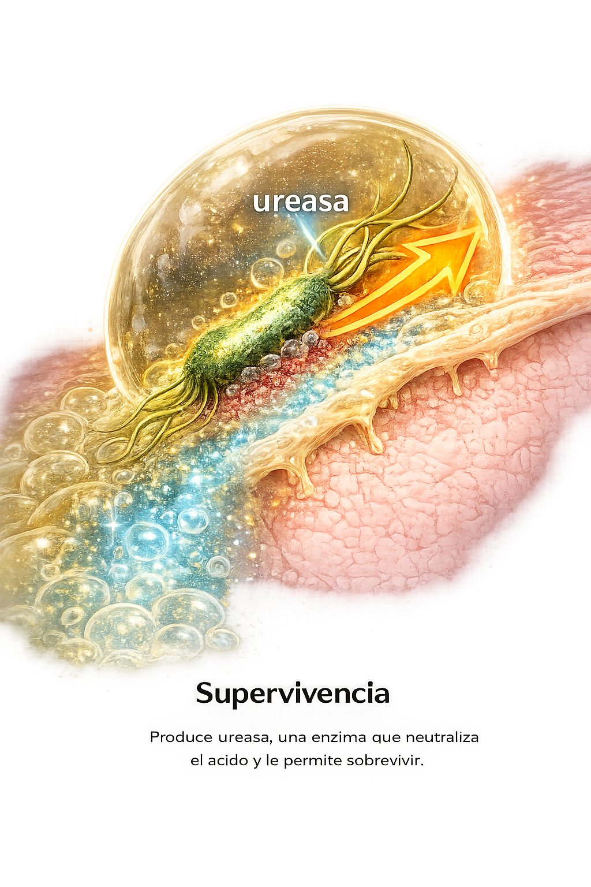
Produce ureasa, una enzima que neutraliza el ácido y le permite sobrevivir.
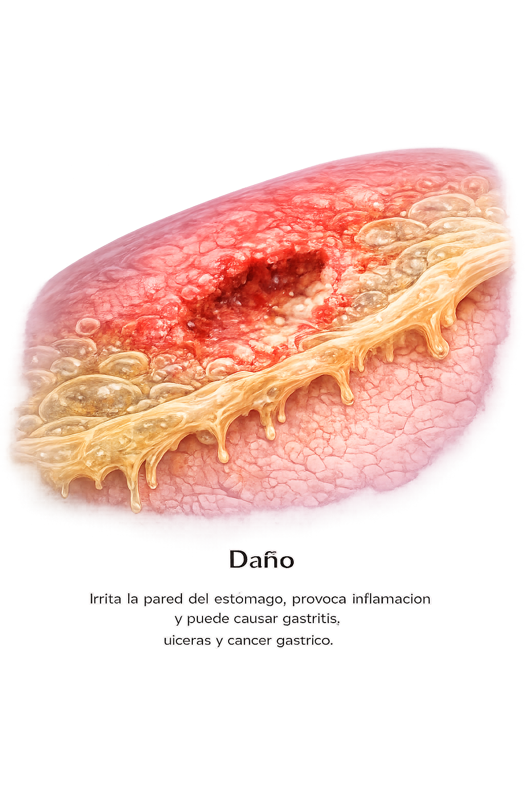
Irrita la pared del estómago, provoca inflamación y puede causar gastritis, úlceras y cáncer gástrico.
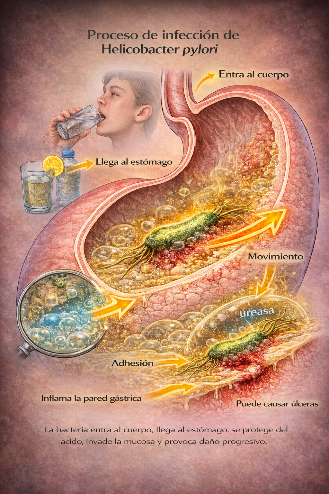
La bacteria entra al cuerpo, llega al estómago, se protege del ácido, invade la mucosa y provoca daño progresivo.
Nombre de la enfermedad: Infección por Helicobacter pylori
Puede provocar: Gastritis, úlcera gástrica, úlcera duodenal y en casos graves cáncer gástrico.
Proceso: Entra al cuerpo, llega al estómago, atraviesa el moco, se adhiere a la mucosa, produce ureasa y causa daño.
Texto